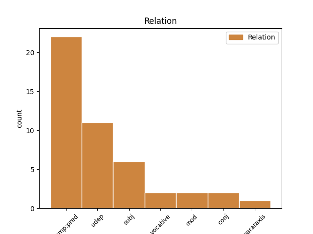
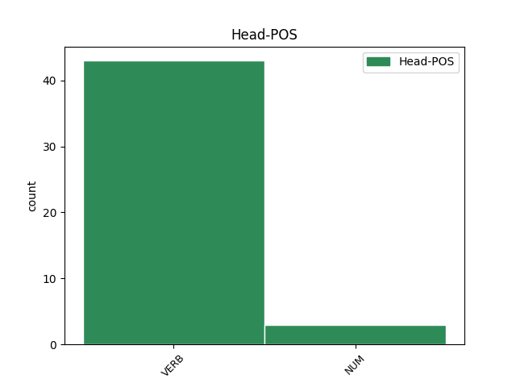
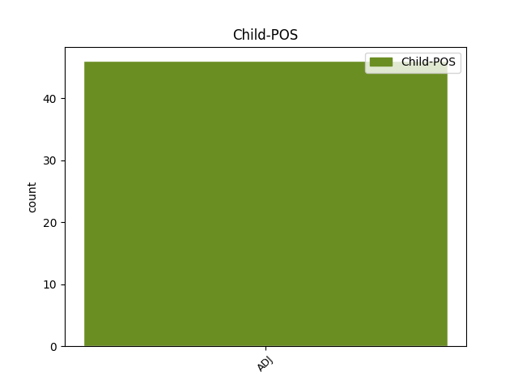

Distribution of features within this leaf



Agreement Rules sorted by frequency.
- When the dependent token is the predicative complements(comp:pred) of the head token, and the head token is VERB and the dependent token is ADJ.
1 jasno _ _ _ _ 0 _ _ _
2 dodan dodan ADJ Appmsnn Case=Nom|Definite=Ind|Degree=Pos|Gender=Masc|Number=Sing|VerbForm=Part 3 comp:pred _ msd=Pdnmein|word=dodan
3 ima imeti VERB Vmpr3s-n Aspect=Imp|Mood=Ind|Number=Sing|Person=3|Polarity=Pos|Tense=Pres|VerbForm=Fin 0 _ _ _
4 še _ _ _ _ 0 _ _ _
5 slalom _ _ _ _ 0 _ _ _
1 kako _ _ _ _ 0 _ _ _
2 bi _ _ _ _ 0 _ _ _
3 sami sam ADJ Agpmpn Case=Nom|Degree=Pos|Gender=Masc|Number=Plur 5 udep _ msd=Ppnmmi|word=sami
4 sebe _ _ _ _ 0 _ _ _
5 opisali opisati VERB Vmep-pm Aspect=Perf|Gender=Masc|Number=Plur|VerbForm=Part 0 _ _ _
6 ? _ _ _ _ 0 _ _ _
1 pa _ _ _ _ 0 _ _ _
2 ti _ _ _ _ 0 _ _ _
3 po _ _ _ _ 0 _ _ _
4 tistih _ _ _ _ 0 _ _ _
5 terenih _ _ _ _ 0 _ _ _
6 smučaš _ _ _ _ 0 _ _ _
7 vsi _ _ _ _ 0 _ _ _
8 ostali ostal ADJ Appmpn Case=Nom|Degree=Pos|Gender=Masc|Number=Plur|VerbForm=Part 11 subj _ msd=Pdnmmi|word=ostali
9 pa _ _ _ _ 0 _ _ _
10 ne _ _ _ _ 0 _ _ _
11 rabijo rabiti VERB Vmpr3p Aspect=Imp|Mood=Ind|Number=Plur|Person=3|Tense=Pres|VerbForm=Fin 0 _ _ _
12 zraven _ _ _ _ 0 _ _ _
13 tebe _ _ _ _ 0 _ _ _
14 biti _ _ _ _ 0 _ _ _
1 o _ _ _ _ 0 _ _ _
2 spoštovane spoštovan ADJ Appfpn Case=Nom|Degree=Pos|Gender=Fem|Number=Plur|VerbForm=Part 7 vocative _ msd=Pdnzmi|word=spoštovane
3 in _ _ _ _ 0 _ _ _
4 spoštovani _ _ _ _ 0 _ _ _
5 mi _ _ _ _ 0 _ _ _
6 pa _ _ _ _ 0 _ _ _
7 gremo iti VERB Vmbr1p Mood=Ind|Number=Plur|Person=1|Tense=Pres|VerbForm=Fin 0 _ _ _
8 naprej _ _ _ _ 0 _ _ _
9 sedem _ _ _ _ 0 _ _ _
10 je _ _ _ _ 0 _ _ _
11 ura _ _ _ _ 0 _ _ _
12 in _ _ _ _ 0 _ _ _
13 triinštirideset _ _ _ _ 0 _ _ _
14 minut _ _ _ _ 0 _ _ _
15 nova _ _ _ _ 0 _ _ _
16 nagradna _ _ _ _ 0 _ _ _
17 igra _ _ _ _ 0 _ _ _
18 na _ _ _ _ 0 _ _ _
19 frekvencah _ _ _ _ 0 _ _ _
20 eee _ _ _ _ 0 _ _ _
21 radia _ _ _ _ 0 _ _ _
22 capris _ _ _ _ 0 _ _ _
23 in _ _ _ _ 0 _ _ _
24 sicer _ _ _ _ 0 _ _ _
25 bogatejši _ _ _ _ 0 _ _ _
26 od _ _ _ _ 0 _ _ _
27 soseda _ _ _ _ 0 _ _ _
1 ker _ _ _ _ 0 _ _ _
2 vemo _ _ _ _ 0 _ _ _
3 da _ _ _ _ 0 _ _ _
4 smo _ _ _ _ 0 _ _ _
5 skoraj _ _ _ _ 0 _ _ _
6 vsi _ _ _ _ 0 _ _ _
7 no _ _ _ _ 0 _ _ _
8 pod _ _ _ _ 0 _ _ _
9 eee _ _ _ _ 0 _ _ _
10 pod _ _ _ _ 0 _ _ _
11 stresom _ _ _ _ 0 _ _ _
12 eni en NUM Mlpmpn Case=Nom|Gender=Masc|Number=Plur|NumForm=Word|NumType=Card 0 _ _ _
13 bolj _ _ _ _ 0 _ _ _
14 drugi drug ADJ Mlpmpn Case=Nom|Gender=Masc|Number=Plur 12 conj _ msd=Kbzmmi|word=drugi
15 manj _ _ _ _ 0 _ _ _
1 tako _ _ _ _ 0 _ _ _
2 kot _ _ _ _ 0 _ _ _
3 sem _ _ _ _ 0 _ _ _
4 mu _ _ _ _ 0 _ _ _
5 naročil _ _ _ _ 0 _ _ _
6 tako _ _ _ _ 0 _ _ _
7 je biti VERB Va-r3s-n Mood=Ind|Number=Sing|Person=3|Polarity=Pos|Tense=Pres|VerbForm=Fin 0 _ _ _
8 treba _ _ _ _ 0 _ _ _
9 to _ _ _ _ 0 _ _ _
10 narediti _ _ _ _ 0 _ _ _
11 eee _ _ _ _ 0 _ _ _
12 sem _ _ _ _ 0 _ _ _
13 mu _ _ _ _ 0 _ _ _
14 vse _ _ _ _ 0 _ _ _
15 lepo _ _ _ _ 0 _ _ _
16 povedal _ _ _ _ 0 _ _ _
17 in _ _ _ _ 0 _ _ _
18 razložil _ _ _ _ 0 _ _ _
19 eee _ _ _ _ 0 _ _ _
20 sem _ _ _ _ 0 _ _ _
21 pa _ _ _ _ 0 _ _ _
22 glih _ _ _ _ 0 _ _ _
23 malo _ _ _ _ 0 _ _ _
24 razočaran razočaran ADJ Appmsnn Case=Nom|Definite=Ind|Degree=Pos|Gender=Masc|Number=Sing|VerbForm=Part 7 parataxis _ msd=Pdnmein|word=razočaran
25 z _ _ _ _ 0 _ _ _
26 vašo _ _ _ _ 0 _ _ _
27 volno _ _ _ _ 0 _ _ _
Disagree Examples:
1 nobenega _ _ _ _ 0 _ _ _
2 hostla _ _ _ _ 0 _ _ _
3 nisva _ _ _ _ 0 _ _ _
4 imela imeti VERB Vmpp-dm Aspect=Imp|Gender=Masc|Number=Dual|VerbForm=Part 0 _ _ _
5 rezerviranega rezerviran ADJ Appnsg Case=Gen|Degree=Pos|Gender=Neut|Number=Sing|VerbForm=Part 4 comp:pred _ msd=Pdnser|word=rezerviranega
6 pač _ _ _ _ 0 _ _ _
7 ne _ _ _ _ 0 _ _ _
8 tako _ _ _ _ 0 _ _ _
9 tako _ _ _ _ 0 _ _ _
10 da _ _ _ _ 0 _ _ _
11 je _ _ _ _ 0 _ _ _
12 bilo _ _ _ _ 0 _ _ _
13 kar _ _ _ _ 0 _ _ _
14 kul _ _ _ _ 0 _ _ _
1 in _ _ _ _ 0 _ _ _
2 kaj _ _ _ _ 0 _ _ _
3 imata imeti VERB Vmpr3d-n Aspect=Imp|Mood=Ind|Number=Dual|Person=3|Polarity=Pos|Tense=Pres|VerbForm=Fin 0 _ _ _
4 skupnega skupen ADJ Agpnsg Case=Gen|Degree=Pos|Gender=Neut|Number=Sing 3 comp:pred _ msd=Ppnser|word=skupnega
5 eee _ _ _ _ 0 _ _ _
6 ti _ _ _ _ 0 _ _ _
7 dve _ _ _ _ 0 _ _ _
8 skupini _ _ _ _ 0 _ _ _
9 psihološki _ _ _ _ 0 _ _ _
10 pa _ _ _ _ 0 _ _ _
11 eee _ _ _ _ 0 _ _ _
12 fiziološki _ _ _ _ 0 _ _ _
13 ja _ _ _ _ 0 _ _ _
14 … _ _ _ _ 0 _ _ _
15 točno _ _ _ _ 0 _ _ _
16 tako _ _ _ _ 0 _ _ _
17 ja _ _ _ _ 0 _ _ _
18 ja _ _ _ _ 0 _ _ _
19 so _ _ _ _ 0 _ _ _
20 notranji _ _ _ _ 0 _ _ _
21 ja _ _ _ _ 0 _ _ _
1 tu _ _ _ _ 0 _ _ _
2 imamo _ _ _ _ 0 _ _ _
3 tudi _ _ _ _ 0 _ _ _
4 graf _ _ _ _ 0 _ _ _
5 kjer _ _ _ _ 0 _ _ _
6 imamo imeti VERB Vmpr1p-n Aspect=Imp|Mood=Ind|Number=Plur|Person=1|Polarity=Pos|Tense=Pres|VerbForm=Fin 0 _ _ _
7 eee _ _ _ _ 0 _ _ _
8 prikazano prikazan ADJ Appnsn Case=Nom|Degree=Pos|Gender=Neut|Number=Sing|VerbForm=Part 6 comp:pred _ msd=Pdnsei|word=prikazano
9 koliko _ _ _ _ 0 _ _ _
10 je _ _ _ _ 0 _ _ _
11 kakšno _ _ _ _ 0 _ _ _
12 je _ _ _ _ 0 _ _ _
13 to _ _ _ _ 0 _ _ _
14 razmerje _ _ _ _ 0 _ _ _
15 zasebne _ _ _ _ 0 _ _ _
16 javne _ _ _ _ 0 _ _ _
17 univerze _ _ _ _ 0 _ _ _
18 v _ _ _ _ 0 _ _ _
19 evropi _ _ _ _ 0 _ _ _
1 ob _ _ _ _ 0 _ _ _
2 tem _ _ _ _ 0 _ _ _
3 vivaldijevem _ _ _ _ 0 _ _ _
4 stavku _ _ _ _ 0 _ _ _
5 sem _ _ _ _ 0 _ _ _
6 se _ _ _ _ 0 _ _ _
7 spomnila _ _ _ _ 0 _ _ _
8 kako _ _ _ _ 0 _ _ _
9 so _ _ _ _ 0 _ _ _
10 nekdaj _ _ _ _ 0 _ _ _
11 plesali _ _ _ _ 0 _ _ _
12 in _ _ _ _ 0 _ _ _
13 se _ _ _ _ 0 _ _ _
14 priklanjali priklanjati VERB Vmpp-pm Aspect=Imp|Gender=Masc|Number=Plur|VerbForm=Part 0 _ _ _
15 drug drug ADJ Mlpmsnn Case=Nom|Definite=Ind|Gender=Masc|Number=Sing 14 udep _ msd=Kbzmein|word=drug
16 drugemu _ _ _ _ 0 _ _ _
1 za _ _ _ _ 0 _ _ _
2 bučkino _ _ _ _ 0 _ _ _
3 solato _ _ _ _ 0 _ _ _
4 imava imeti VERB Vmpr1d-n Aspect=Imp|Mood=Ind|Number=Dual|Person=1|Polarity=Pos|Tense=Pres|VerbForm=Fin 0 _ _ _
5 vse _ _ _ _ 0 _ _ _
6 pripravljeno pripravljen ADJ Appnsn Case=Nom|Degree=Pos|Gender=Neut|Number=Sing|VerbForm=Part 4 comp:pred _ msd=Pdnsei|word=prpravlen
7 zdaj _ _ _ _ 0 _ _ _
8 počakava _ _ _ _ 0 _ _ _
9 da _ _ _ _ 0 _ _ _
10 še _ _ _ _ 0 _ _ _
11 on _ _ _ _ 0 _ _ _
12 pripravi _ _ _ _ 0 _ _ _
13 školjke _ _ _ _ 0 _ _ _
14 in _ _ _ _ 0 _ _ _
15 gremo _ _ _ _ 0 _ _ _
16 na _ _ _ _ 0 _ _ _
17 glavno _ _ _ _ 0 _ _ _
18 jed _ _ _ _ 0 _ _ _